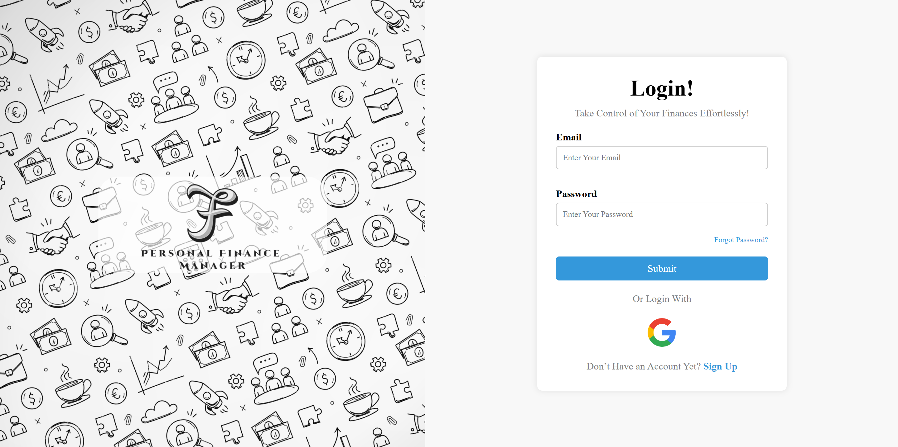
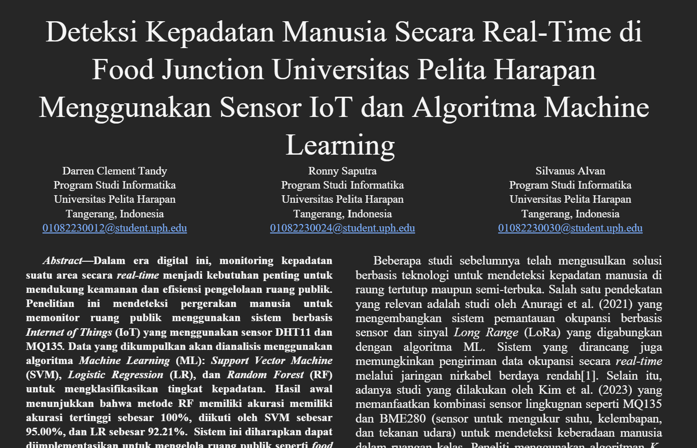

+62 813 4768 5172
Mahasiswa Teknik Informatika dengan keahlian dalam pengembangan aplikasi web, Machine Learning, dan IoT. Menguasai HTML, CSS, JavaScript, serta desain UI/UX menggunakan Figma. Berpengalaman dalam pengumpulan dan analisis data, penerapan algoritma prediksi, serta pembuatan antarmuka yang responsif dan user-friendly. Memiliki kemampuan komunikasi dan kolaborasi tim yang baik untuk mendukung pencapaian tujuan bersama secara efektif.
Tangerang, 7 September 2005
| Personal Finance Manager (2025) | Mengembangkan dan mengimplementasikan antarmuka front-end untuk aplikasi web menggunakan HTML, JavaScript, dan CSS, dengan desain responsif serta navigasi yang mudah digunakan, serta merancang tata letak dan elemen interaktif website di Figma, mengubah ide konsep menjadi prototipe fungsional yang selaras dengan tujuan proyek dan praktik terbaik pengalaman pengguna |  |
| Proyek IoT dan Machine Learning | Mengembangkan sistem deteksi kepadatan manusia berbasis IoT (DHT11, MQ135, ESP32) dengan Machine Learning, mencapai akurasi hingga 100% menggunakan Random Forest, serta mengumpulkan data untuk sistem deteksi kepadatan manusia berbasis IoT dan Machine Learning, serta menyusun laporan hasil analisis. |  |
| Koordinator Exhibition & Bazaar Falcon Project 14 UPH (2024) | Negosiasi tenant, penataan lokasi booth, dan pengelolaan administrasi tenant. |
| Anggota Himpunan Mahasiswa Informatika (2024 - 2025) | Bidang Internal, mengelola hubungan antar mahasiswa di lingkungan kampus. |
| Project 1 | Project 1 |